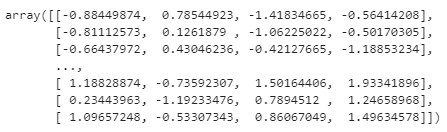
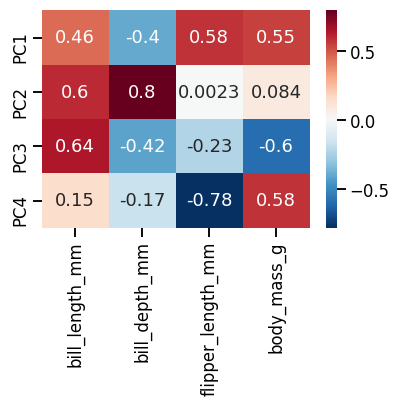
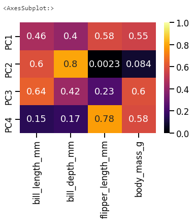
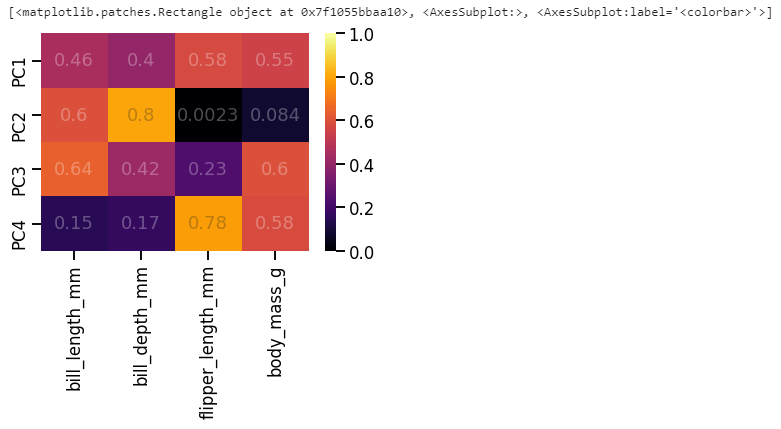
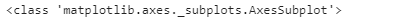
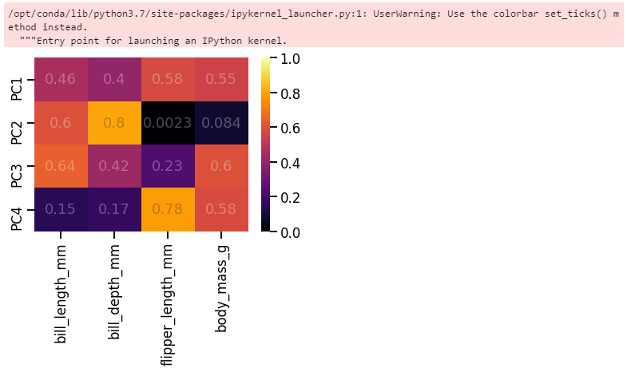
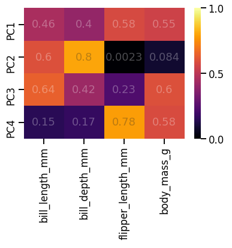
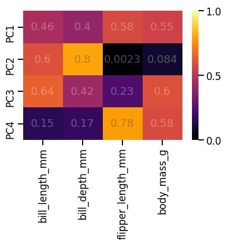
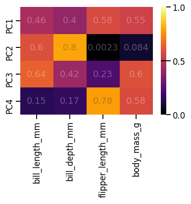
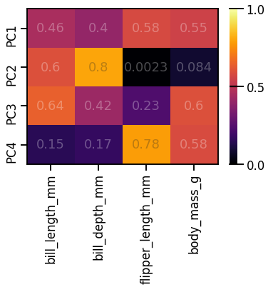

- seaborn의 heatmap은 매우 강력한 도구입니다.
- 한 줄의 명령으로 colormap과 annotation, colorbar가 붙은 정돈된 그림이 나옵니다.
- 그런데 colorbar를 조금 고치고 싶다면, 어떻게 할까요?
1. Seaborn Heatmap
1.1. 예제 데이터 만들기
- Seaborn에 내장된 펭귄 데이터셋을 사용합시다.
1
2
3
4
5
6
7
8
9%matplotlib inline
import numpy as np
import matplotlib.pyplot as plt
import seaborn as sns
sns.set_context("talk")
df_peng = sns.load_dataset("penguins")
1.2. PCA
데이터에 PCA를 적용합니다.
주성분분석후 인자별 기여도 분석을 진행합니다.
예제 데이터라도 standard scaling은 잊지 맙시다.
1
2
3
4
5
6from sklearn.preprocessing import StandardScaler
ss = StandardScaler()
cols_num = ["bill_length_mm", "bill_depth_mm", "flipper_length_mm", "body_mass_g"]
peng_std = ss.fit_transform(df_peng[cols_num].dropna())
peng_std
PCA를 수행합니다.
1
2
3
4from sklearn.decomposition import PCA
pca = PCA()
peng_pca = pca.fit_transform(peng_std)인자별 주성분 기여도를 heatmap으로 표현합니다.
1
2
3
4ticklabels = [f"PC{i+1}" for i in range(peng_pca.shape[1])]
sns.heatmap(pca.components_, annot=True, cmap="RdBu_r",
xticklabels=cols_num, yticklabels=ticklabels)
sns.heatmap()한 줄로 멋진 그림을 그렸습니다.이 그림을 기본으로 조금씩 고쳐보겠습니다.
1.3. 범위, 컬러바 조정
여기서 우리는 주성분에 대한 각 인자의 기여도가 중요하지 방향은 중요하지 않다고 가정합니다.
인자별 중요도가 담긴 pca.components_에 절대값을 취하고, colorbar도 거기에 맞게 한쪽 방향으로 발산하는 inferno를 사용합니다.
1
2
3pca_comp_abs = abs(pca.components_)
sns.heatmap(pca_comp_abs, annot=True, cmap="inferno", vmin=0, vmax=1,
xticklabels=cols_num, yticklabels=ticklabels)
seaborn heatmap을 그리면 함께 출력되는 메시지가 있습니다.
AxesSubplot: 인데,
sns.heatmap()명령의 출력이 Matplotlib의 AxesSubplot 객체라는 의미입니다.
1.4. annotation 불투명도 조정
heatmap 위의 글자가 너무 강렬하다면 불투명도를 조정할 수 있습니다.
seaborn heatmap의 annotation은 딕셔너리 형태의
annot_kws인자로 제어 가능합니다.명령 안에
annot_kws={"alpha": 0.3}을 입력하면 불투명도가 0.3으로 내려가 색이 더 잘 들어옵니다.1
2
3
4
5ax = sns.heatmap(pca_comp_abs, annot=True, cmap="inferno", vmin=0, vmax=1,
xticklabels=cols_num, yticklabels=ticklabels, annot_kws={"alpha":0.3})
fig = ax.figure
print(fig.get_children())
이번에는
sns.heatmap()앞에 ax=를 붙여서 heatmap 객체를 ax 변수에 저장했습니다.그리고
fig = ax.figure명령으로 ax가 속한 figure를 fig 변수에 저장했습니다.fig, ax = plt.subplots()에 이어서sns.heatmap(어쩌구, ax=ax)한 것과 같은 효과입니다.
fig.get_children()명령으로 fig의 구성요소를 확인하면, 맨 마지막에 colorbar가 있습니다.- ax와 fig는 이제 변수에 저장되었으니 마음껏 가지고 놀 수 있습니다.
- colorbar도 마찬가지로 다뤄봅니다.
2. Colorbar
2.1. colorbar 객체 분리
colorbar 객체를 figure에서 떼어냅니다.
1
2cbar = fig.get_children()[-1]
print(type(cbar))
타입을 확인해보니 AxesSubplot입니다.
앞에서 heatmap의 타입도 AxesSubplot이었습니다.
정리하면, 데이터가 표기되는 부분이나 colorbar가 표기되는 부분이나 Matplotlib 구조적으로는 동일하다는 뜻입니다.
그렇다면 데이터를 그리는 Axes에 적용하는 명령어를 colorbar에도 사용할 수 있겠습니다.
2.2. y눈금 수정
0부터 1까지 0.2 단위로 찍힌 현재의 눈금을 0, 0.5, 1 세개만 남기고자 합니다.
일반 plot에서는
set_yticks()로 위치를 잡고set_yticklabels()로 눈금을 입혔습니다.한번
set_yticks()를 실험해 봅니다.아까 그린 그림에서 colorbar만 수정한 후 그림을 그리라
display(fig)명령으로 확인합니다.1
2cbar.set_yticks([-0.5, 0, 0.5])
display(fig)
바뀌지 않습니다.
colorbar는 축을 지정한 후
set_ticks()를 사용하라고 합니다.고분고분 말을 듣습니다.
cbar.yaxis로 y축 지정 후set_ticks()를 적용합니다.1
2cbar.yaxis.set_ticks([0, 0.5, 1])
display(fig)
y축 눈금이 변경되었습니다.
y축 눈금은 다른 방식으로도 바꿀 수 있습니다.
Matplotlib의 MultipleLocator를 사용하면, 눈금 간격을 지정할 수 있습니다.
이번엔 그림을 처음부터 다시 그려봅니다.
1
2
3
4
5
6
7from matplotlib.ticker import MultipleLocator
ax = sns.heatmap(pca_comp_abs, annot=True, cmap="inferno", vmin=0, vmax=1,
xticklabels=cols_num, yticklabels=ticklabels, annot_kws={"alpha":0.3})
fig = ax.figure
cbar = fig.get_children()[-1]
cbar.yaxis.set_major_locator(MultipleLocator(0.5))
동일한 효과가 반영되었습니다.
2.3. colorbar 위 눈금
가끔 colorbar 옆에 달린 눈금이 colorbar까지 이어지면 좋겠다 싶기도 합니다.
colorbar의 정체는 Axes이므로, Axes의 수평선 명령
axhline()을 사용합니다.-0.5, 0, 0.5 세 군데에 선을 그려봅니다.
1
2
3
4
5cbar.axhline(-0.5, c="k")
cbar.axhline(0, c="k")
cbar.axhline(0.5, c="k")
display(fig)
0.5에는 그려지지만 0과 1에는 그려지지 않았습니다.
colorbar 위 아래 한계선에 딱 걸려서 그렇습니다.
- 이럴 때는 테두리를 그려버리면 됩니다.
- 내친 김에 heatmap에도 그립니다.
1
2
3
4
5
6ax.spines[["bottom", "top", "left", "right"]].set_visible(True)
cbar.spines[["bottom", "top"]].set_visible(True)
cbar.spines[["bottom", "top"]].set_color("k")
cbar.axhline(0, c="k")
display(fig)
3. 정리
- 오늘의 글은 딱 한 문장으로 요약됩니다.
- colorbar도 Axes다.
- 괜히 겁먹지 맙시다.